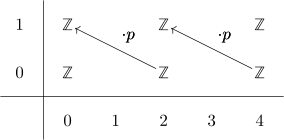
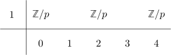

integral homology ring structure of BZ/p
Proposition
The homology ring of $B \mathbb{Z}/p \mathbb{Z}$ is given by
Proof
Recall the integral homology of BZ/nZ use the fiber sequence
\begin{align*}
S^1 \rightarrow B \mathbb{Z}/p \mathbb{Z} \rightarrow \mathbb{C}\mathbb{P}^{\infty}
\end{align*}
which is one of monoids, as it is given by looping $K(\mathbb{Z},2) \xrightarrow{\cdot p} K(\mathbb{Z},2) \rightarrow K(\mathbb{Z}/p \mathbb{Z}, 2)$. Hence the homological serre spectral sequence is multiplicative and we get the $\mathbb{F}_p$ serre spectral sequence

Hence the $E^2$ page looks like

and the ring structure comes from the ring structure of $S^1$, which is trivial in higher degrees for degree reasons.